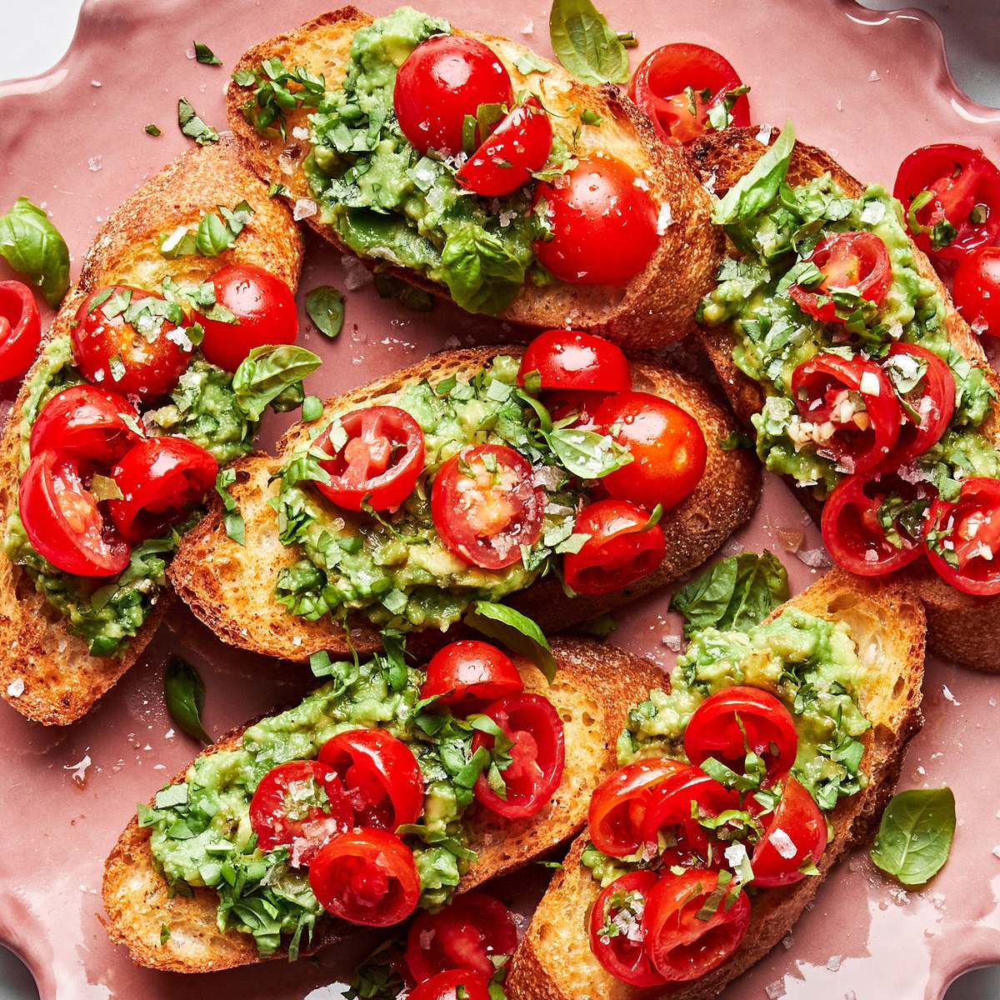

Bruschetta

Bruschetta is a classic Italian appetizer that is easy to make at home. Toasted bread is topped with a mixture of juicy tomatoes, garlic, Parmesan cheese, fresh basil, and balsamic.
What is Bruschetta?
Bruschetta (pronounced brew-SKET-tah) is an Italian appetizer or antipasti that starts with a base of toasted or grilled bread. The bread is then served warm either with a topping spooned over or with a topping on the side so each person can build their own bruschetta. Bruschetta is meant to be served as a hand-held finger food, large enough for one or two bites.
Ingredients
- 1 loaf French bread, cut into ¼-inch slices
- 1 tablespoon extra-virgin olive oil
- 8 roma (plum) tomatoes, diced
- ⅓ cup chopped fresh basil
- 1 ounce Parmesan cheese, freshly grated
- 2 cloves garlic, minced
- 1 tablespoon good quality balsamic vinegar
- 2 teaspoons extra-virgin olive oil
- ¼ teaspoon kosher salt
- ¼ teaspoon freshly ground black pepper
Steps
- Gather all ingredients. Preheat the oven to 400 degrees F (200 degrees C).
- Brush bread slices on both sides lightly with 1 tablespoon oil and place on large baking sheet. Toast bread until golden, about 5 to 10 minutes, turning halfway through.
- Meanwhile, toss together tomatoes, basil, Parmesan cheese, and garlic in a bowl.
- Mix in balsamic vinegar, 2 teaspoons olive oil, kosher salt, and pepper.
- Spoon tomato mixture onto toasted bread slices.
- Serve immediately and enjoy!
Home